Fingerprint Analysis
Biometric Methods and Computer Vision in MATLAB®
Roland Bruggmann, BSc student Information Technology Specialisation in Computer Perception and Virtual Reality CPVR <mailto:roland.bruggmann@students.bfh.ch>
Bern University of Applied Sciences, Engineering and Information Technology Biel/Bienne, January 2016
References:
Maltoni, D. et al.: Handbook of Fingerprint Recognition, 2. ed., chapter 3: Fingerprint Analysis and Representation. Springer 2009.
Bazen, Asker M. and Gerez, Sabih H.: Systematic Methods for the Computation of the Directional Fields and Singular Points of Fingerprints. IEEE Transactions on Pattern Analysis and Machine Intelligence, vol. 24, No. 7, July 2002 (p. 905-919).
Contents
Clear matrices, close figures and clear cmd wnd.
clear variables; clear globals; close all; clc;
1) Capture
Our capture is reduced to a read in of a raw fingerprint image. We use fingerprint images from FVC 2004, database 3, set B (see International Competition for Fingerprint Verification Algorithms 2004, BioLab, University of Bologna, Online: <http://bias.csr.unibo.it/fvc2004/>). We assume the image is in grayscales (white: 255, black: 0).
% I = imread('../FVC2004/DB3_B/103_6.tif'); I = imread('../fp-images/11_4.png'); [sizeX, sizeY] = size(I); figure; imshow(I); axis off; title('Original Image');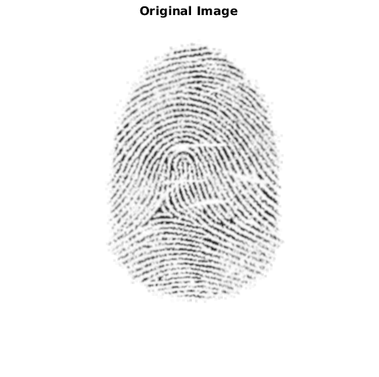
2) Preprocessing
2.1) Quality Enhancement
To largen the image quality we apply a high-pass filter (Laplacian of Gaussian LoG). First, we transform the image to its frequency domain using a Fast Fourier Transformation (FFT), then we augment the amplitude of the dominant frequencies over relatively small regions and finally retransform the image back to the spatial domain by the use of an inverse FFT (IFFT).
% Convert the image from spatial to frequency domain and shift low % frequencies to the center of the spectrum. J = fftshift(fft2(double(I))); % Delete low frequencies using a high-pass filter hsize = 3; hsigma = 0.2; h = fspecial('log', hsize, hsigma); Jh = conv2(J,h); border = (hsize-1)/2; rJh = Jh(1+border:end-border,1+border:end-border); subJh = minus(J, rJh); % Shift high frequencies back to the center of the spectrum and convert % the image from frequency to spatial domain and extract real part. Ih = ifft2(fftshift(subJh)); Iq = abs(Ih); figure; imshow(log(max(abs(J), 1e-6)),[]), colormap(jet(64)); axis off; title('Amplitudes'); hold off; figure; imshow(log(max(abs(Jh), 1e-6)),[]), colormap(jet(64)); axis off; title('After LoG'); hold off; figure; imshow(Iq, []); axis off; title('Reslut'); hold off;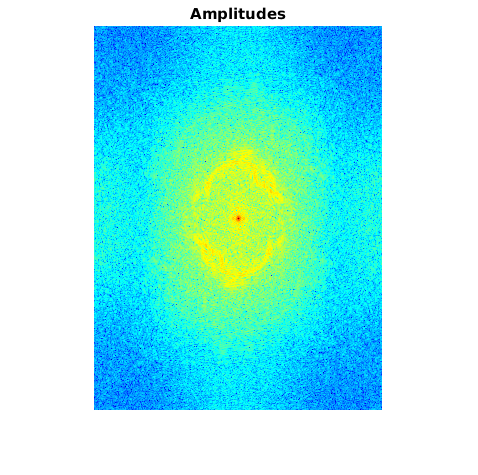 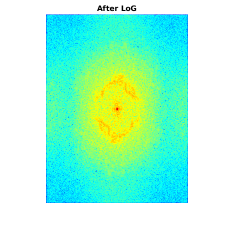 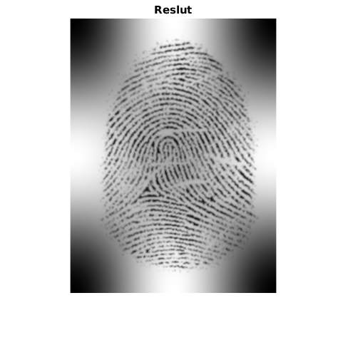
2.2) Variance, Quality and Segmentation
Segmentation using Gabor filters, cp. Maltoni, chapter 3.4 Segmentation (p. 116-119).
[V, outer, Iseg] = segmentTexture(I); % Q = TODO figure; imshow(V, []); axis off; title('Variance'); hold off; % figure; imshow(Q, []); axis off; title('Quality'); hold off; figure; imshow(Iseg, []); axis off; title('Segmented'); hold off;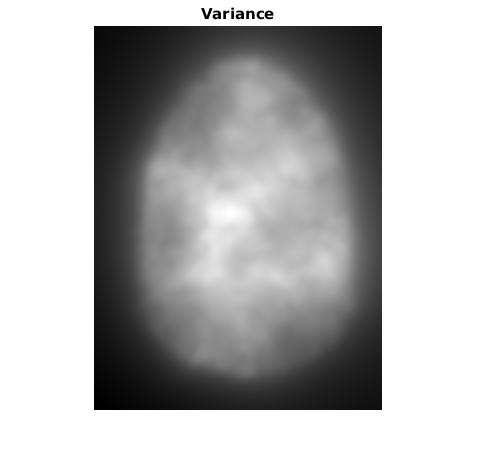
2.3) Gradients, directions and coherence
cp. Maltoni, chapter 3.2 Local Ridge Orientation, especially 3.2.1 Gradient-based approaches, p. 102-106 and Bazen/Gerez.
% Gradients Gx and Gy f = fspecial('gaussian', 7, 1); % hsize: 7; sigma: 1 [fx,fy] = gradient(f); Gx = filter2(fx, Iseg); Gy = filter2(fy, Iseg); % Local ridge orientation D (in radiant) f = fspecial('gaussian', 17, 3); % hsize: 17; sigma: 3 Gxy = Gx.*Gy; Gxy = 2*filter2(f, Gxy); Gxx = Gx.^2; Gxx = filter2(f, Gxx); Gyy = Gy.^2; Gyy = filter2(f, Gyy); denom = sqrt((Gxx - Gyy).^2 + Gxy.^2) + eps; sin2theta = Gxy./denom; sin2theta = filter2(f, sin2theta); cos2theta = (Gxx-Gyy)./denom; cos2theta = filter2(f, cos2theta); D = pi/2 + atan2(sin2theta,cos2theta)/2; % Covariance C as reliability of orientation Imin = (Gyy+Gxx)/2 - (Gxx-Gyy).*cos2theta/2 - Gxy.*sin2theta/2; Imax = Gyy+Gxx - Imin; C = 1 - Imin./(Imax+.001); C = C.*(denom>.001); figure; imshow(I, []); alpha .5; axis off; title('Gradients'); hold on; quiver(Gx,Gy); hold off; figure; directionmap(D, 7, I); title('Directions'); hold off; figure; imshow(C, []); axis off; title('Coherence'); hold off;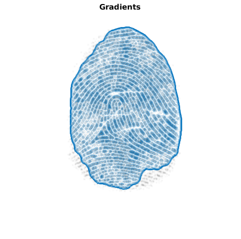 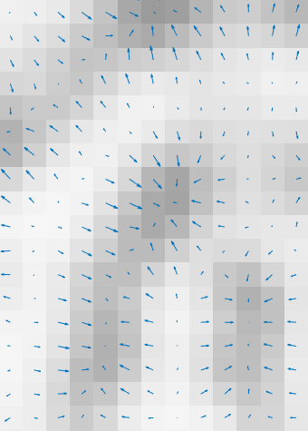 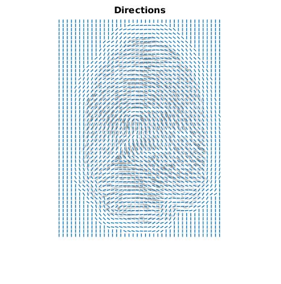 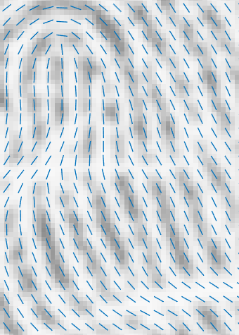 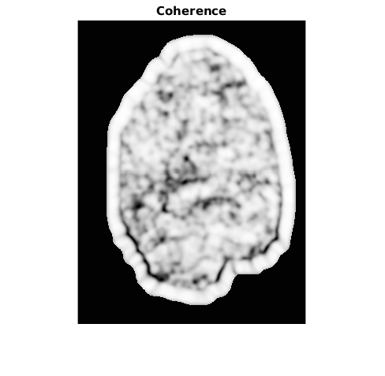
2.4) Binarisation and skeleton
(Thresholded binarisation should be replace by local binarisation.)
binarised = Iseg(:,:,1)>230; % We generate a skeleton by thinning the region. We remove pixels from the % border and spur pixels 20 times. thinned = ~bwmorph(~binarised,'thin',Inf); % 'skel' skeletonised = bwmorph(thinned,'spur',20); figure; imshow(binarised); axis off; title('Binarised'); hold off; figure; imshow(skeletonised); axis off; title('Skeleton'); hold off;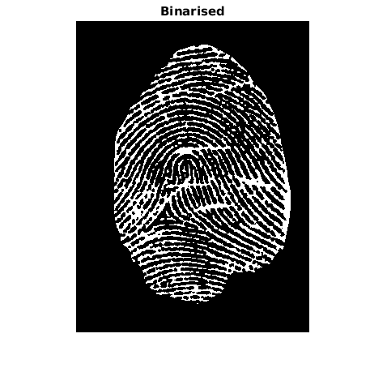 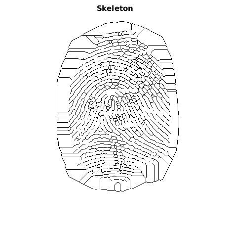
3.) Feature Extraction
3.1) Global Features
To extraxt the global features we use the coherence map. This time, we choose a large sigma for the Gaussian weighting used to sum the gradient moments (cp. Maltoni, p. 124).
[Gx2, Gy2, D2, C2] = ridgeorient(I, 1, 17, 3); Imin = imregionalmin(C2); % Global = TODO figure; imshow(C2, []); axis off; title('Coherence 2'); hold off; figure; imshow(Imin, []); axis off; title('Minima'); hold off; %figure; imshow(Global, []); axis off; title('Global Features'); hold off; TODO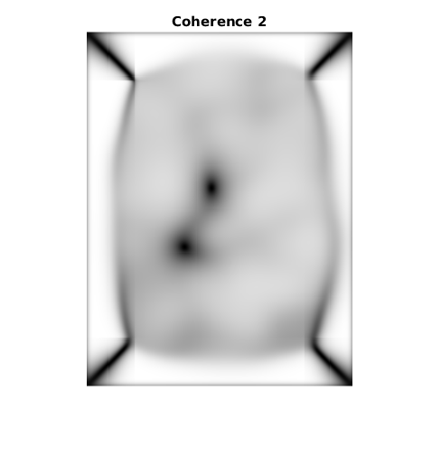 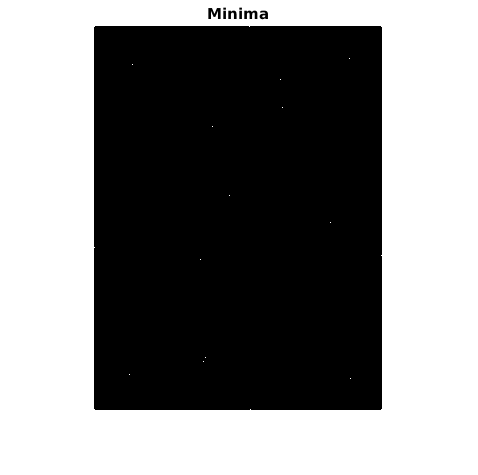
3.2) Minutiae
cp. Maltoni, chapter 3.7 Minutiae Detection (p. 143-157). Reference: Athi Narayanan S http://sites.google.com/site/athisnarayanan/s_athi1983@yahoo.co.in
Im = skeletonised; % Structure element SE2 = 3; mat = zeros(SE2); w = floor(SE2/2); center = w + 1; % Temporary data to work with row = sizeX + 2*w; % enhance area at left and right (Randproblem) col = sizeY + 2*w; % enhance area at top and bottom (Randproblem) double temp(row,col); temp = zeros(row,col); temp( (center):(end-w), (center):(end-w) ) = Im(:,:); % Minutiae containers ridge = zeros(row,col); bifurcation = zeros(row,col); for x = (center+10):(sizeX+w-10) for y = (center+10):(sizeY+w-10) % fill in mat with values from temp e = 1; for k = x-w:x+w f = 1; for l = y-w:y+w mat(e,f) = temp(k,l); f = f+1; end e=e+1; end; if( mat(center,center) == 0 ) ridge(x,y) = sum(sum(~mat)); bifurcation(x,y) = sum(sum(~mat)); end; end; end;
3.2.1) Ridge endings
find 2 in 3x3
[ridgeX, ridgeY] = find(ridge == 2); ridgeLen = length(ridgeX); % Display re = zeros(row,col,3); re(:,:,1) = temp .* 255; re(:,:,2) = temp .* 255; re(:,:,3) = temp .* 255; for i=1:ridgeLen re((ridgeX(i)-3):(ridgeX(i)+3),(ridgeY(i)-3),2:3)=0; re((ridgeX(i)-3):(ridgeX(i)+3),(ridgeY(i)+3),2:3)=0; re((ridgeX(i)-3),(ridgeY(i)-3):(ridgeY(i)+3),2:3)=0; re((ridgeX(i)+3),(ridgeY(i)-3):(ridgeY(i)+3),2:3)=0; re((ridgeX(i)-3):(ridgeX(i)+3),(ridgeY(i)-3),1)=255; re((ridgeX(i)-3):(ridgeX(i)+3),(ridgeY(i)+3),1)=255; re((ridgeX(i)-3),(ridgeY(i)-3):(ridgeY(i)+3),1)=255; re((ridgeX(i)+3),(ridgeY(i)-3):(ridgeY(i)+3),1)=255; end
3.2.2) Bifurcations
find 4 in 3x3
[bifurcationX, bifurcationY] = find(bifurcation == 4); bifurcationLen = length(bifurcationX); % Display bif=zeros(row,col,3); bif(:,:,1) = temp .* 255; bif(:,:,2) = temp .* 255; bif(:,:,3) = temp .* 255; for i=1:bifurcationLen bif((bifurcationX(i)-3):(bifurcationX(i)+3),(bifurcationY(i)-3),1:2)=0; bif((bifurcationX(i)-3):(bifurcationX(i)+3),(bifurcationY(i)+3),1:2)=0; bif((bifurcationX(i)-3),(bifurcationY(i)-3):(bifurcationY(i)+3),1:2)=0; bif((bifurcationX(i)+3),(bifurcationY(i)-3):(bifurcationY(i)+3),1:2)=0; bif((bifurcationX(i)-3):(bifurcationX(i)+3),(bifurcationY(i)-3),3)=255; bif((bifurcationX(i)-3):(bifurcationX(i)+3),(bifurcationY(i)+3),3)=255; bif((bifurcationX(i)-3),(bifurcationY(i)-3):(bifurcationY(i)+3),3)=255; bif((bifurcationX(i)+3),(bifurcationY(i)-3):(bifurcationY(i)+3),3)=255; end figure; imshow(re, []); axis off; title('Ridge endings'); hold off; figure; imshow(bif, []); axis off; title('Bifurcations'); hold off;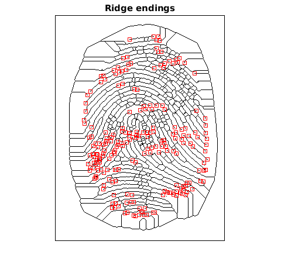 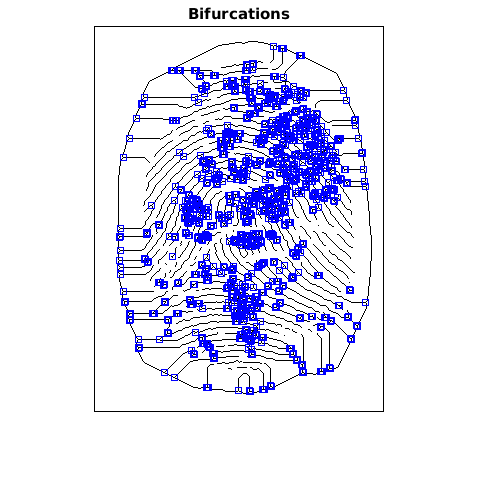